## Error in knitr::include_graphics("assets/img/lec05_syllabus.png"): Cannot find the file(s): "assets/img/lec05_syllabus.png"
Make your paper figures professionally: Scientific data analysis and visualization with R
Grammar of graphics and Basic Plotting
Vangelis Theodorakis, Fatemeh Behjati, Julien Gagneur, Marcel Schultz
Multidimensional data
For this part, we assume all variables to be quantitative.
That means, all variable values will be plotted on continuous (xy-)axes.
More complicated, mixed binary/multinomial/ordinal/continuous data might require specialized plotting and data analysis strategies
Small dimensionality, ~3-10 variables
Plot matrix
library(GGally)
ggpairs(mpg, columns = c("displ","cyl","cty","hwy"),
upper = list(continuous = wrap("cor", method = "spearman"))) + mytheme
Small dimensionality, ~3-10 variables
Plot matrix
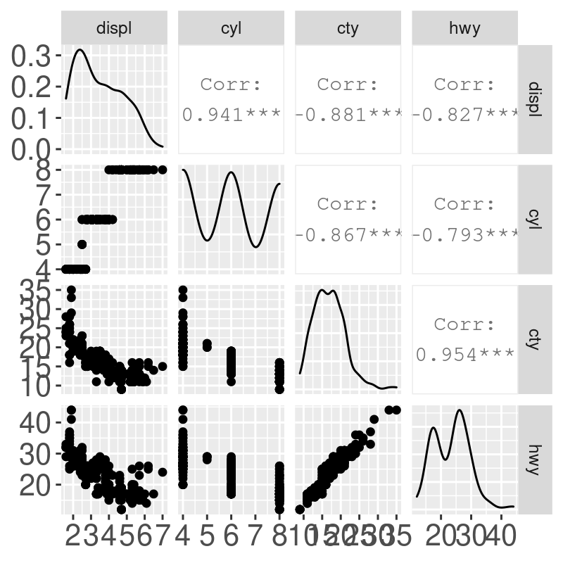
Medium dimensionality, <100 variables
Correlation plots, "corrgrams", "correlograms"
GGally::ggcorr(mtcars, geom = 'circle', params=c(corMethod="spearman"))

High dimensionality, >100, >>100 variables
Heatmaps
mtcars_melted <- as.data.table(scale(mtcars[1:10,]), keep.rownames = "Cars") %>%
melt(id.var = "Cars")
mtcars_melted <- mtcars_melted
ggplot(mtcars_melted, aes(variable, Cars)) +
geom_tile(aes(fill=value)) +
scale_fill_gradient2(low='darkblue', mid= 'white', high='darkred') + mytheme
High dimensionality, >100, >>100 variables
Heatmaps
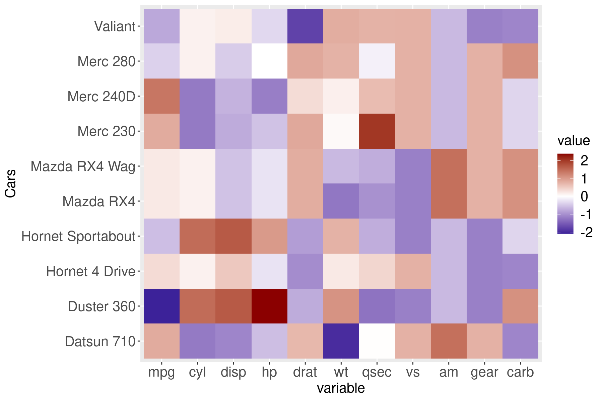
Heatmaps with hierarchical clustering
Rows and colums are clustered based on their similarity (eg Euclidean distance or correlation). This reveals groups of features or observations that are similar. The algorithm will be explained in the next lecture
library(pheatmap)
pheatmap(mtcars)
Heatmaps with hierarchical clustering
Rows and colums are clustered based on their similarity (eg Euclidean distance or correlation). This reveals groups of features or observations that are similar.
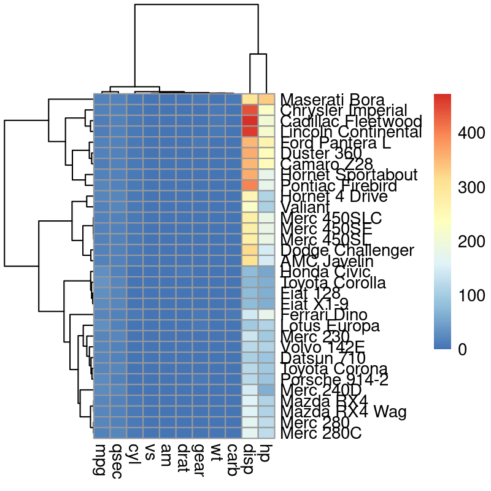
Heatmaps with hierarchical clustering with scaling
It can be useful to bring all variables to the same scale by subtracting their means and dividing by their standard deviation. This is done with setting the parameter scale='column'. Row-scaling can also sometines make sense.
pheatmap(mtcars, scale="column")
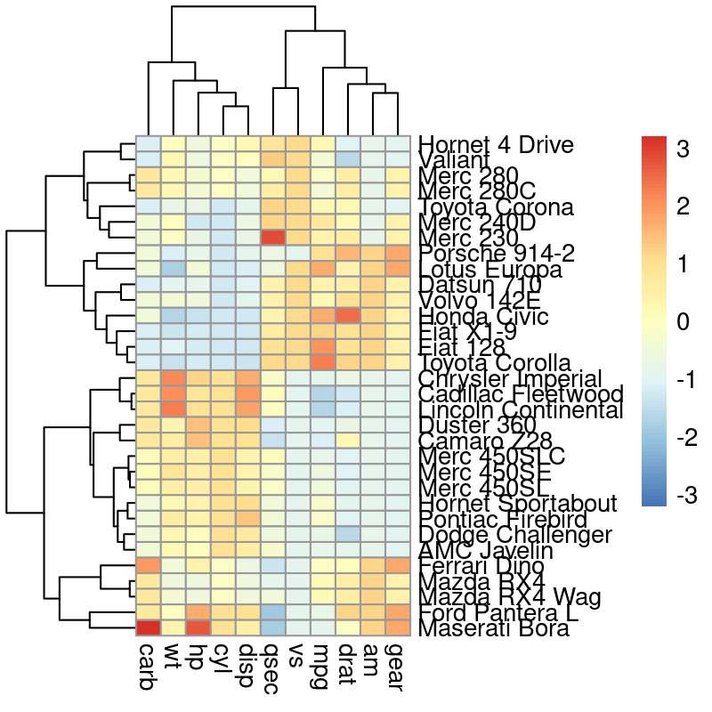
Negative correlation between tea drinking and lung cancer, as reported by observational studies:
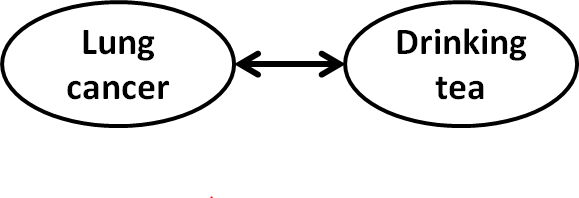
Question
What is "wrong" with the negative correlation between tea drinking and lung cancer?
- A. Even if the result is reported as significant, this could be pure chance.
- B. It is confounded by the country people live in.
- C. It does not make sense to investigate this correlation, because we know tea drinking does not have anything to do with cancer.
- D. It is confounded by smoking status.
Next slide
Question
What is "wrong" with the negative correlation between tea drinking and lung cancer?
- A. Even if the result is reported as significant, this could be pure chance.
- No, that is exactly what significant means, it is not occuring by chance (if statistics are performed properly).
- B. It is confounded by the country people live in.
- Interesting idea, but not in this case.
- C. It does not make sense to investigate this correlation, because we know tea drinking does not have anything to do with cancer.
- That would introduce a severe research bias, I am excluding associations that I do not believe in.
- D. It is confounded by smoking status.
- Yes, smokers are not tea drinkers (they seem to prefer coffee), and smoking is causally related to lung cancer.
Confounders
Correlations are often driven by confounding factors. Depending on the context, this can lead to spurious associations and false interpretations.
Negative correlation between tea drinking and lung cancer:

Simulation of a confounder
A simulated dataset with an RNA concentration (expression), a phenotype variable (eg body height) and genotype at one gene:
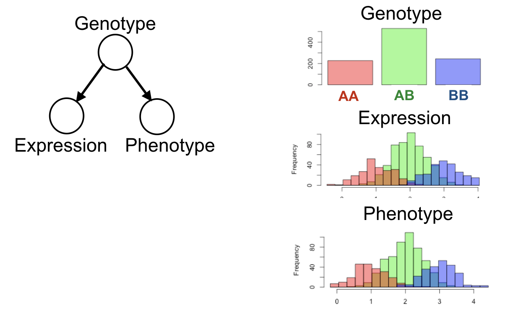
Simulation of a confounder
10 data points of the simulated dataset:
head(dt, n=10)
## Genotype Expression Phenotype
## 1: AA 4.939291 2.64527121
## 2: AA 3.046467 1.02860972
## 3: AA 4.671952 0.06257079
## 4: AB 5.773916 5.58712846
## 5: BB 7.040729 8.70974445
## 6: AB 6.624168 5.64488205
## 7: AA 5.010156 2.85618874
## 8: AB 6.231052 2.36653022
## 9: AB 6.967483 4.25342892
## 10: BB 8.506309 5.37050589
Confounder variable induces a correlation
Phenotype and expression nicely correlate:
ggplot(dt, aes(Phenotype, Expression)) + geom_point()
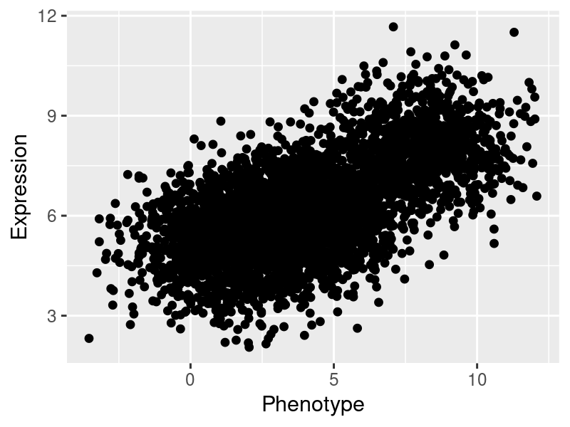
Confounder variable induces a correlation
Phenotype and expression nicely correlate:
dt[, cor(Phenotype, Expression)]
## [1] 0.6300597
...but are they directly correlated? Does this indicates that one is the cause of the other one?
Facets allows plotting conditioning on a third variable (potential confounder)
ggplot(dt, aes(Phenotype, Expression)) + geom_point() + facet_wrap(~ Genotype)

Facets allows plotting conditioning on a third variable (potential confounder)
dt[, cor(Expression, Phenotype), by = "Genotype"]
## Genotype V1
## 1: AA -0.013573546
## 2: AB -0.007420982
## 3: BB 0.040612184
Conditioning can rule out direct correlation and therefore causation
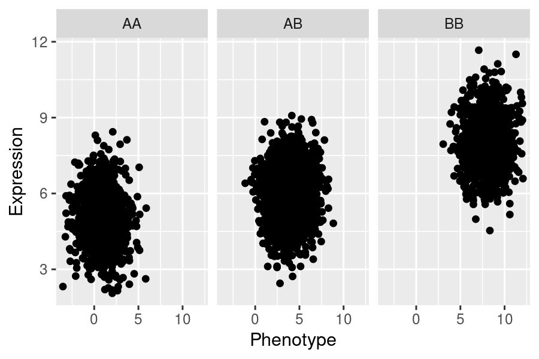
Statistically speaking: The two variables are correlated, but their correlation is explained away by the genotype. Conditioned on the genotype (one also says given the genotype), their correlation is zero. This rules out a causal relationship from one to the other. Note that correlation never proves causation. However, conditioning can rule out causation.
The diamonds data
## # A tibble: 1 x 10
## carat cut color clarity depth table price x y z
## <dbl> <ord> <ord> <ord> <dbl> <dbl> <int> <dbl> <dbl> <dbl>
## 1 0.23 Ideal E SI2 61.5 55 326 3.95 3.98 2.43
Description of R datasets are available through the help.
?diamonds
The diamonds data
| Variable | Description |
|---|---|
| price | price in US dollars ($326-$18,823) |
| carat | weight of the diamond (0.2-5.01) |
| cut | quality of the cut (Fair, Good, Very Good, Premium, Ideal) |
| color | diamond colour, from J (worst) to D (best) |
| clarity | a measurement of how clear the diamond is (I1 (worst), SI1, SI2, VS1, VS2, VVS1, VVS2, IF (best)) |
| x | length in mm (0-10.74) |
| y | width in mm (0-58.9) |
| z | depth in mm (0-31.8) |
| depth | total depth percentage = z / mean(x, y) = 2 * z / (x + y) (43-79) |
| table | width of top of diamond relative to widest point (43-95) |
Conditioning with categorial variables: multi-way histograms
We introduced that, one can map variables to colours easily with ggplot.
ggplot(data = diamonds, aes(cut, fill = cut)) +
geom_bar() + mytheme
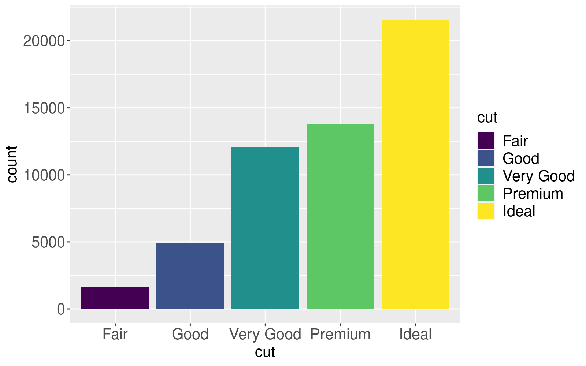
Conditioning with categorial variables: multi-way histograms
What happens if you map fill colour to other variable like clarity?
Conditioning with categorial variables: multi-way histograms stack
ggplot(diamonds, aes(x = cut, fill = clarity)) +
geom_bar() + mytheme
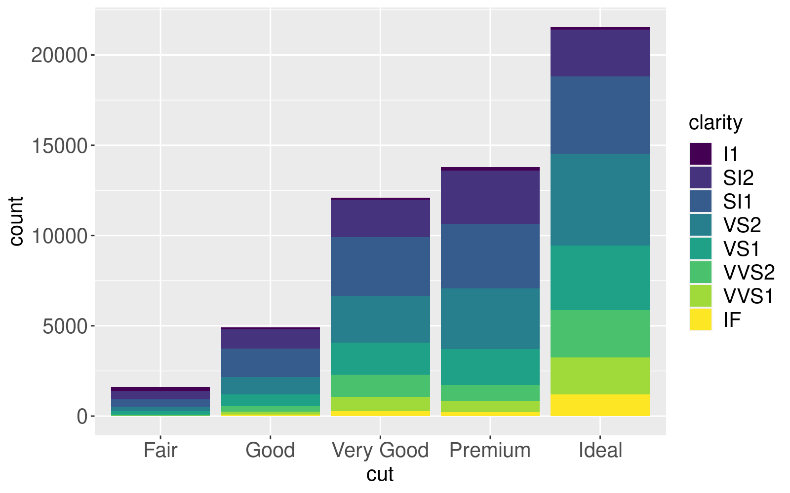
The stacking is performed automatically by the position adjustment specified by the position argument. The default position is "stack".
Conditioning with categorial variables: multi-way histograms fill
ggplot(diamonds, aes(x = cut, fill = clarity)) +
geom_bar(position = "fill") + mytheme
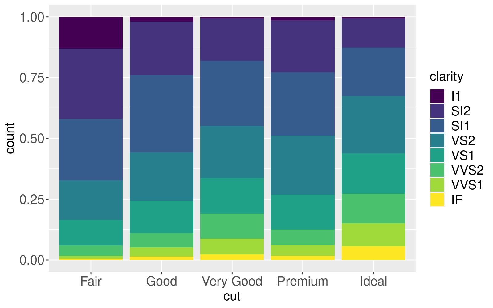
position = "fill" works like stacking, but makes each set of stacked bars the have same height. This makes it easier to compare proportions across groups.
Conditioning with categorial variables: multi-way histograms dodge
ggplot(diamonds, aes(x = cut, fill = clarity)) +
geom_bar(position = "dodge") + mytheme
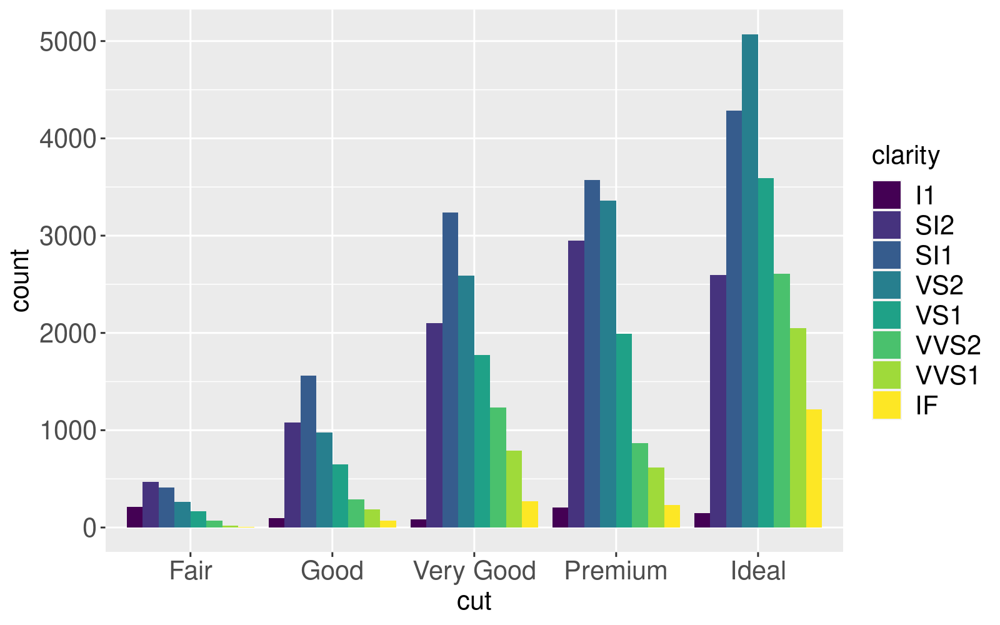
position = "dodge" places overlapping objects directly beside one another. This makes it easier to compare individual values.
Color coding in R
Four ways to code colors in R (ggplot2):
1. Default aesthetic mapping (aes(color = variable))
2. Predefined color numbers
3. Predefined color names
4. RGB - HTML color codes
Color coding in R
Four ways to code colors in R (ggplot2):
1. Default aesthetic mapping (aes(color = variable))
x <- c(1:5); dt <- data.table(x)
p <- ggplot(dt, aes(x)) # save the mapping to p
p + geom_bar(aes(fill = factor(x))) # factor convert x into factors, then map to ggplot default color palette
p + geom_bar(aes(fill = factor(x))) + scale_fill_brewer(palette="Spectral") # change default color palette
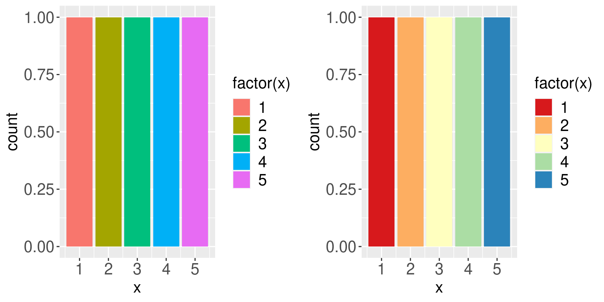
Color coding in R
Four ways to code colors in R (ggplot2):
2. Predefined color numbers
x <- c(1:5); dt <- data.table(x)
p <- ggplot(dt, aes(x)) # save the mapping to p
p + geom_bar(fill = x) + mytheme

Color coding in R
Four ways to code colors in R (ggplot2):
3. Predefined color names, as listed in colors()
x <- c(1:5); dt <- data.table(x)
p <- ggplot(dt, aes(x)) # save the mapping to p
p + geom_bar(fill=c("green", "red", "blue", "gray","palevioletred3")) + mytheme
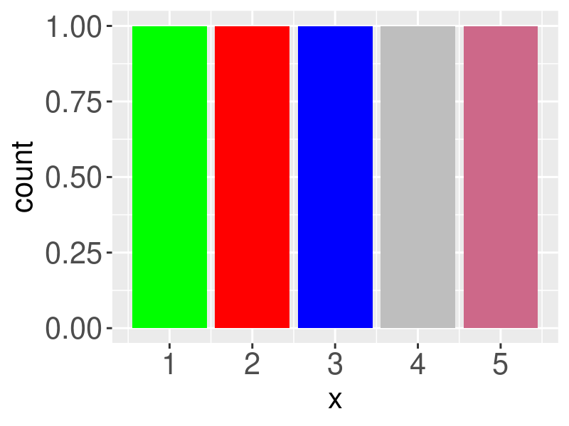
head(colors(), n = 5)
## [1] "white" "aliceblue" "antiquewhite" "antiquewhite1"
## [5] "antiquewhite2"
Color coding in R
Four ways to code colors in R (ggplot2):
4. RGB - HTML color codes
- Additive color model
- Hexadecimal coding of three number pairs for red, green, blue
00-FFcorresponds to 0-255
Color coding in R
Four ways to code colors in R (ggplot2):
4. RGB - HTML color codes
x <- c(1:5); dt <- data.table(x)
p <- ggplot(dt, aes(x)) # save the mapping to p
p + geom_bar(fill=c("#FFFFFF", "#FFFF00", "#666666","#22AAAA", "#000080")) + mytheme
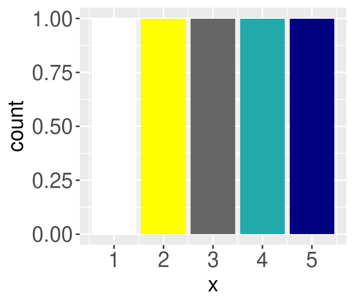
RColorBrewer
The RColorBrewer package provides a set of nice color palettes
display.brewer.all()
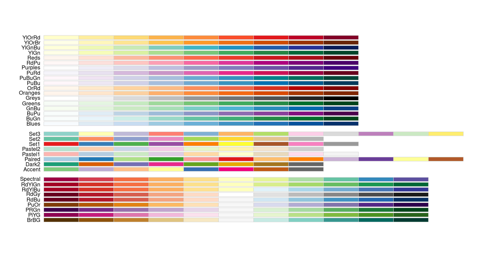
Careful with colors
Color in context
- Like all aspects of visual perception, we do not perceive color in an absolute manner.
- Perception of an object is influenced by the context
- Visual perception is relative, not absolute.

Careful with colors
Color in context
Rule #1
If you want different objects of the same color in a table or graph to look the same,
make sure that the background is consistent.
Rule #2
If you want objects in a table or graph to be easily seen,
use a background color that contrasts sufficiently with the object.
Careful with colors
Use color meaningfully and with restraint
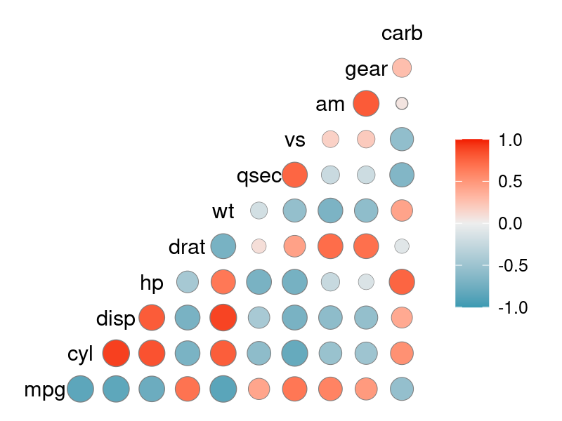
Careful with colors
Use color meaningfully and with restraint
Rule #3
Use color only when needed to serve a particular communication goal.
Rule #4
Use different colors only when they correspond to differences of meaning in the data.
Rule #5
Use soft, natural colors to display most information
and bright and/or dark colors to highlight information that requires greater attention.
Careful with colors
Define standard palettes of colors for particular purposes
Different types of color palettes
- Categorical: separate items into distinct groups
- Sequential: quantitative differences

- Diverging: quantitative differences, breakpoint

What's wrong with the following plot?
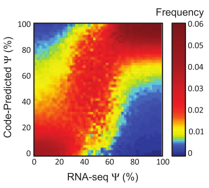
Xiong et al., Science 2014
What's wrong with the following plot?
Rainbow color where there are no breakpoints. Color bundaries are created based on author's interest.
Manually twisted color scale.
Themes control non-data parts of your plots:
- Complete theme
- Axis title
- Axis text
- Plot title
- Legends
They control the appearance of you plots: size, color, position...
But nothing to do with how the data is represented.
Complete themes
ggplot(ind, aes(CPI, HDI, color=region)) +
geom_point() +
theme_bw()
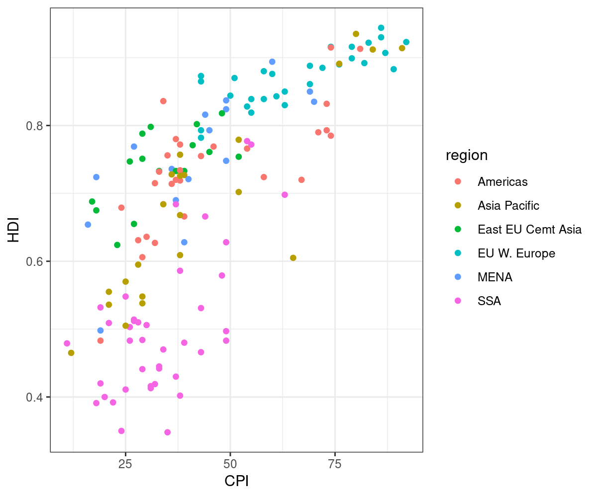
Other complete themes: theme_classic, theme_minimal, theme_light, theme_dark.
More themes with ggthemes package (from github)
library(ggthemes)
ggplot(ind, aes(CPI, HDI, color=region)) +
geom_point() +
theme_wsj() + scale_colour_wsj("colors6", "")
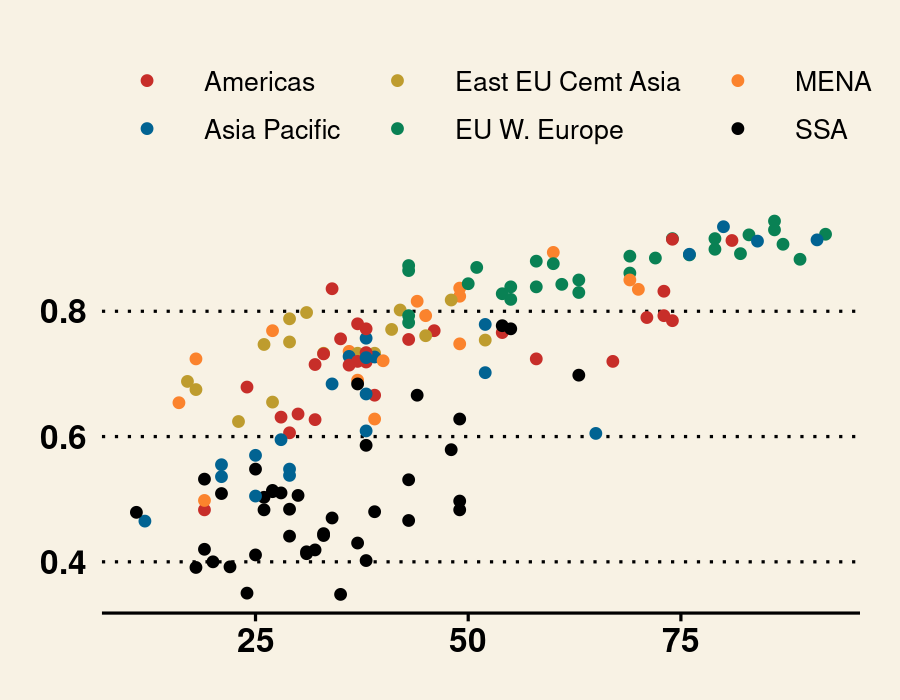
wsj: Wall Street Journal
Axis title
axis.title, axis.title.x, axis.title.y
ggplot(ind, aes(CPI, HDI, color=region)) +
geom_jitter() +
theme(axis.title = element_text(size=20, color = 'red'))
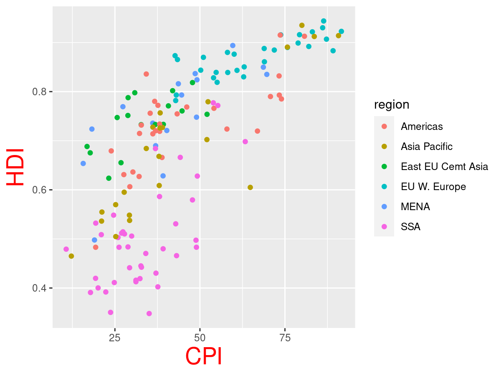
Axis title
axis.text, axis.text.x, axis.text.y
ggplot(ind, aes(CPI, HDI, color=region)) +
geom_jitter() +
theme(axis.text = element_text(size=20, color = 'blue'))
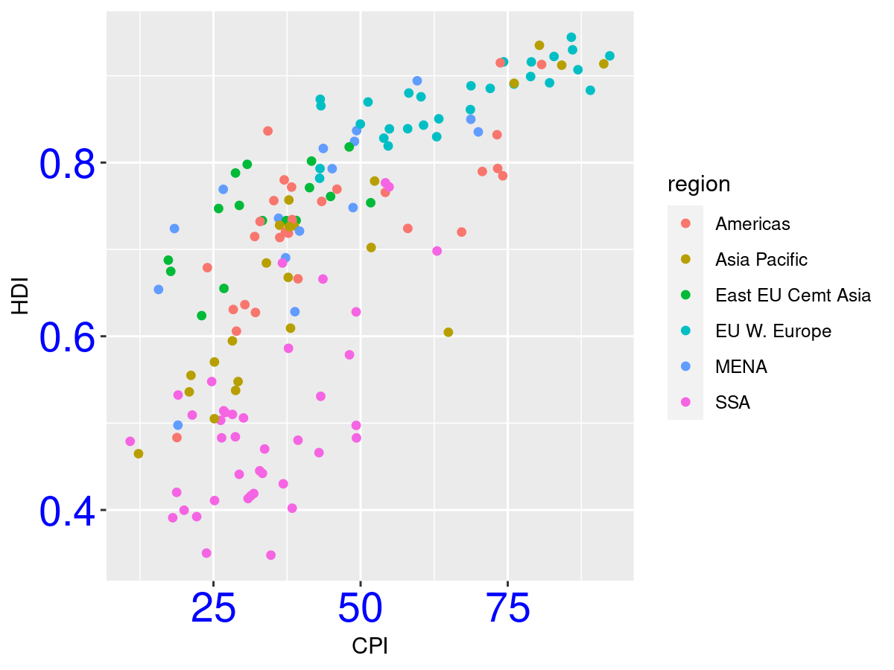
Summary axis elements (don't have to know them by heart)
The axis elements control the apperance of the axes:
| Element | Setter | Description |
|---|---|---|
| axis.line | element_line() |
line parallel to axis (hidden in default themes) |
| axis.text | element_text() |
tick labels |
| axis.text.x | element_text() |
x-axis tick labels |
| axis.text.y | element_text() |
y-axis tick labels |
| axis.title | element_text() |
axis titles |
| axis.title.x | element_text() |
x-axis title |
| axis.title.y | element_text() |
y-axis title |
| axis.ticks | element_line() |
axis tick marks |
| axis.ticks.length | unit() |
length of tick marks |
Plot title themes
ggplot(ind, aes(CPI, HDI, color=region)) +
geom_jitter() +
ggtitle('CPI vs HDI') +
theme(plot.title = element_text(size=20, face = 'bold'))
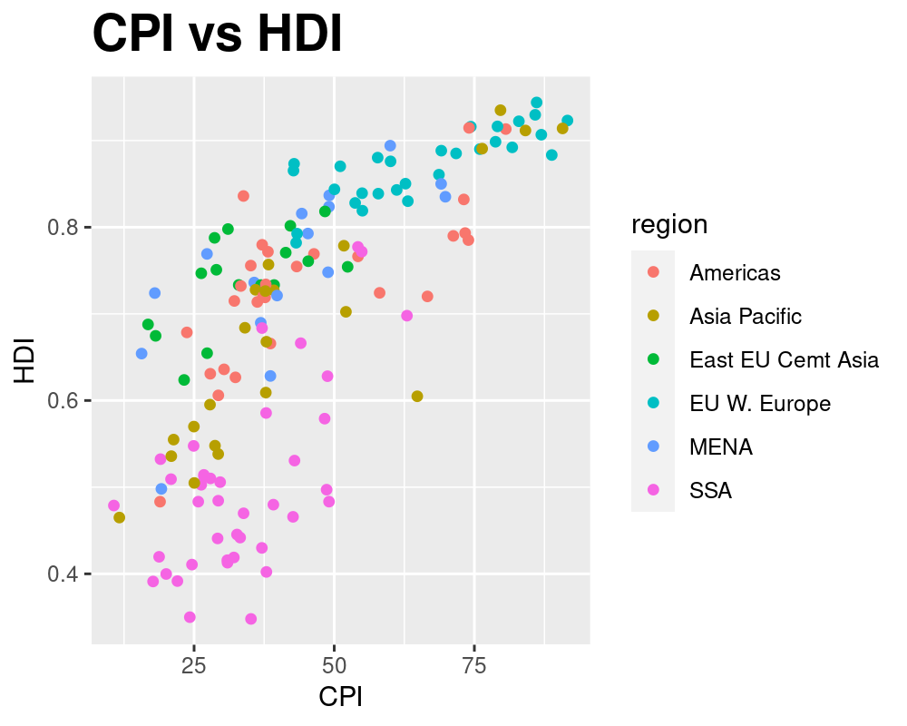
Plot title themes (don't have to know them by heart)
Some elements affect the plot as a whole:
| Element | Setter | Description |
|---|---|---|
| plot.background | element_rect() |
plot background |
| plot.title | element_text() |
plot title |
| plot.margin | margin() |
margins around plot |
Legend themes (don't have to know them by heart)
base <- ggplot(ind, aes(CPI, HDI, color=region)) +
geom_jitter()
base + theme(
legend.text = element_text(size = 15),
legend.title = element_text(size = 15, face = "bold")
)
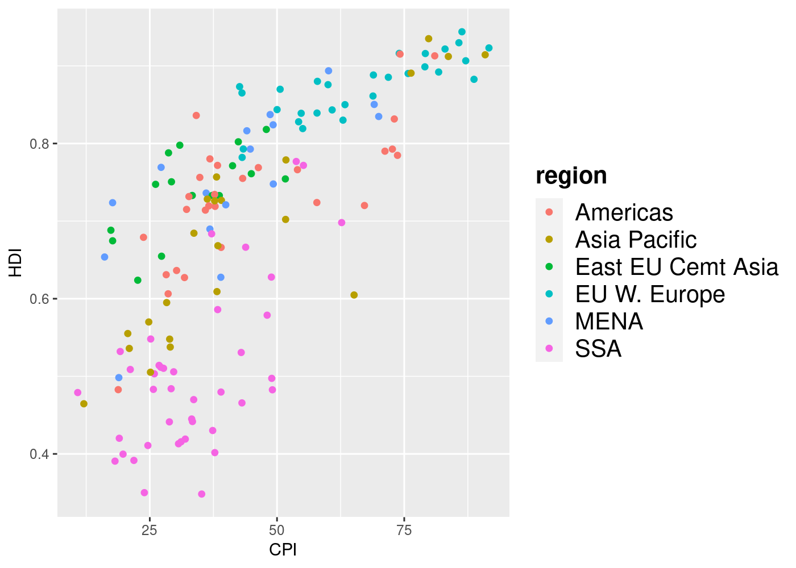
Legend themes (don't have to know them by heart)
The legend elements control the apperance of all legends. You can also modify the appearance of individual legends by modifying the same elements in guide_legend() or guide_colourbar().
| Element | Setter | Description |
|---|---|---|
| legend.background | element_rect() |
legend background |
| legend.key | element_rect() |
background of legend keys |
| legend.key.size | unit() |
legend key size |
| legend.key.height | unit() |
legend key height |
| legend.key.width | unit() |
legend key width |
| legend.margin | unit() |
legend margin |
| legend.text | element_text() |
legend labels |
| legend.text.align | 0--1 | legend label alignment (0 = right, 1 = left) |
| legend.title | element_text() |
legend name |
| legend.title.align | 0--1 | legend name alignment (0 = right, 1 = left) |
Interactive plots with plotly
p <- ggplot(mtcars, aes(factor(cyl), mpg)) +
geom_boxplot()
p <- ggplotly(p)
tmpf1 <- "assets/fig/lec07-boxplot.html"
save_plotly_as_widget(p, file.path(getwd(), tmpf1))
Interactive plots with plotly
Chart junk
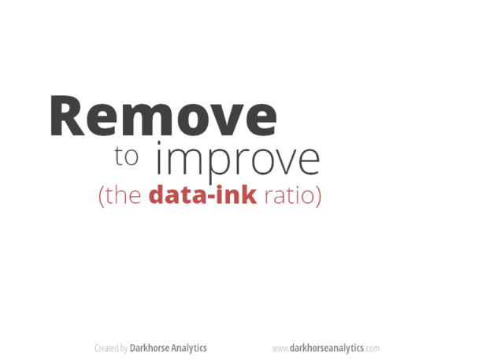 Chart junk example
Chart junk
“Perfection is achieved not when there is nothing more to add, but when there is nothing left to take away” – Antoine de Saint-Exupery
Chart junk is identified as poor data-ink ratio.
- double encoding (color and axis encode the same)
- heavy or dark grid lines
- unnecessary text
- ornamented chart axes
- pictures within graphs
- shading or 3D perspective
Know when to include 0
- When using barplots it is dishonest not to start the bars at 0.
- This is because, by using a barplot, we are implying the length is proportional to the quantities being displayed.
- By avoiding 0, relatively small differences can be made to look much bigger than they actually are.
- This approach is often used by politicians or media organizations trying to exaggerate a difference.
Know when to include 0
- Here is an illustrative example:

- (Source: Fox News, via Peter Aldhous via Media Matters via Fox News) via Media Matters.
Know when to include 0
- From the plot above, it appears that apprehensions have almost tripled when in fact they have only increased by about 16%.
- Starting the graph at 0 illustrates this clearly:
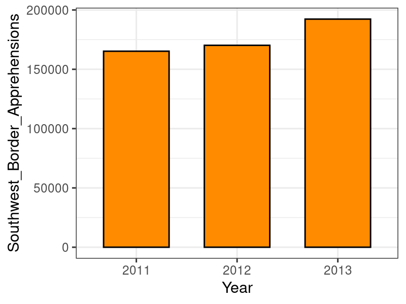
Avoid pseudo three dimensional plots
- The figure below, taken from the scientific literature [CITE: DNA Fingerprinting: A Review of the Controversy Kathryn Roeder Statistical Science Vol. 9, No. 2 (May, 1994), pp. 222-247] shows three variables: dose, drug type and survival.
- Although your screen is flat and two dimensional, the plot tries to imitate three dimensions and assigns a dimension to each variable.

Avoid pseudo three dimensional plots
- Humans are not good at seeing in three dimensions (which explains why it is hard to parallel park) and our limitation is even worse with pseudo-three-dimensions.
- To see this, try to determine the values of the survival variable in the plot above.
- Can you tell when the purple ribbon intersects the red one?
Avoid pseudo three dimensional plots
This is an example in which we can easily use color to represent the categorical variable:
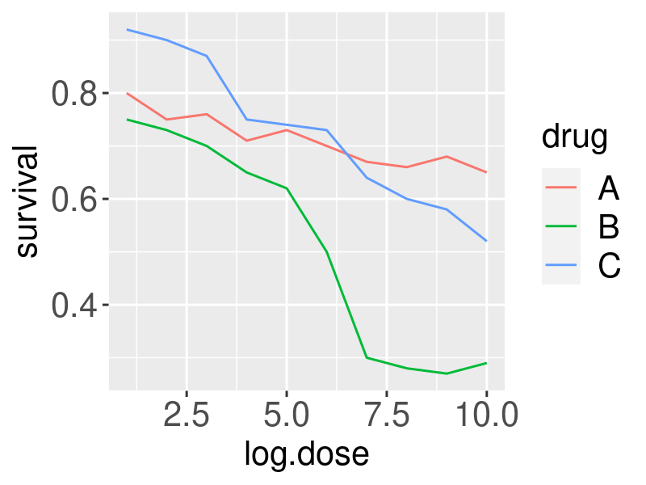
Descriptive plots
- Some plots allow exploring how data distribute.
- For a univariate data these are are histograms, single boxplots. For multivariate data these are clustered heatmaps, PCA projection, etc.
- Mathematically they correspond to descriptions of the distribution p(X) where X is the variable(s).
- In Machine learning terms, they require methods from unsupervised learning.
Demonstrative plots
Other plots allows supporting a claim regarding a relationship between variables. For instance a drug increases survival, sun exposure increases skin cancer, etc.
For such plots, one typically uses the y-axis for the response variable (eg survival rate, skin cancer occurence) and the x-axis for the explanatory variables (e.g drug dose, sun exposure). E.g. side-by-side boxplots, scatter plots.
Mathematically they correspond to descriptions of the conditional distributions p(y|X) where y is the response and X is the explanatory variable(s).
In Machine learning terms, they require methods from supervised learning (e.g. regression, classification).
Descriptive vs. demonstrative plots
A typical mistake is to use a descriptive plots to make a claim.
E.g.: "the samples are good because the replicate samples group together on the PCA plot". PCA is just a visualization tool that is not designed to assess reproducibility between samples.
To make a claim, use demonstrative plots. For instance boxplot the distribution of the correlation between samples (y-axis) for the group of replicate samples or the group of sample pairs from different experiments (x-axis).
Have expressive figure titles
- Figure title (or slide tile) states the finding (what do we observe?) and not the methods (how do you do it?). For example a good title sates "The further away an airport, the longer the flight" and not "Scatter-plotting air time and distance".
- All labels should be legible for the audience (big fonts). Axis and colors and shapes should be labelled.
An example slide is given next...
The further away an airport, the longer the flight
flightsLAX <- fread('../../../extdata/flightsLAX.csv')
ggplot(flightsLAX, aes(DISTANCE, AIR_TIME)) +
geom_point(alpha=0.2) + geom_smooth(method='lm')
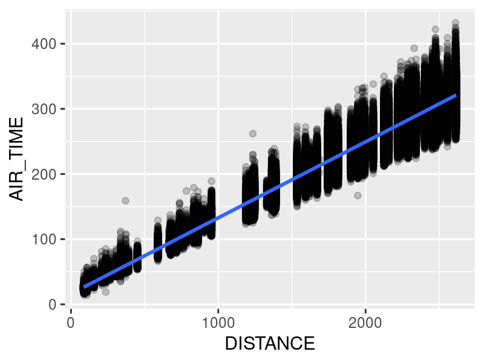
Question
Which item is no chart junk?
A a bright red plot border
B light grey major grid lines
C bold labels and grid lines
D data labels in Batik Gangster font
Bright colors and bold text draw attention. Batik Gangster actually exists. Grid lines are no data points.
Light grey does not draw attention and grid lines are less important than data.
Question
Which item is no chart junk?
Answer: B light grey major grid lines
Bright colors and bold text draw attention. Batik Gangster actually exists. Grid lines are no data points.
Light grey does not draw attention and grid lines are less important than data.
References
This slides are mostly based on Hadley Wickhams book ggplot2: elegant graphics for data analysis
Graphic Principles cheat sheet: https://graphicsprinciples.github.io/
In-depth documentations: